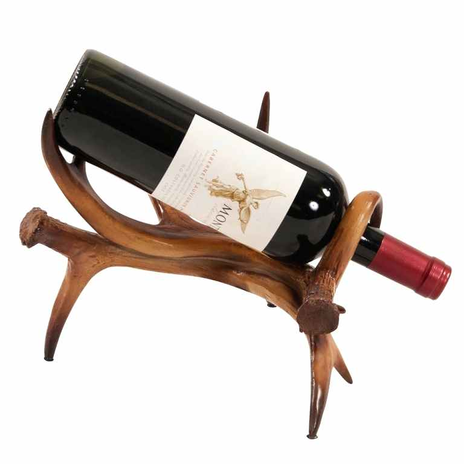
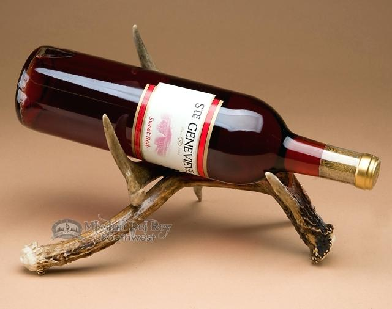
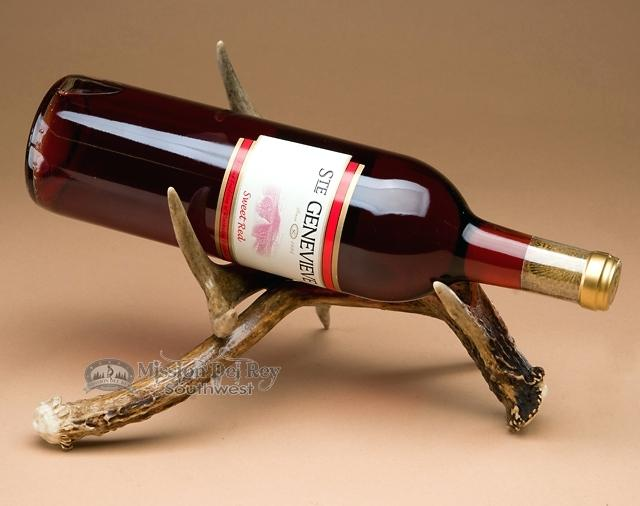

A7: Final Project Proposal
For the final project I am creating a wine rack with attached wine glass holder. While looking for inspiration I found a cute wood wine rack shaped like an elephant on pinterest. To incorporate all the techniques used in class I am adding glass holders to the rack.

 
